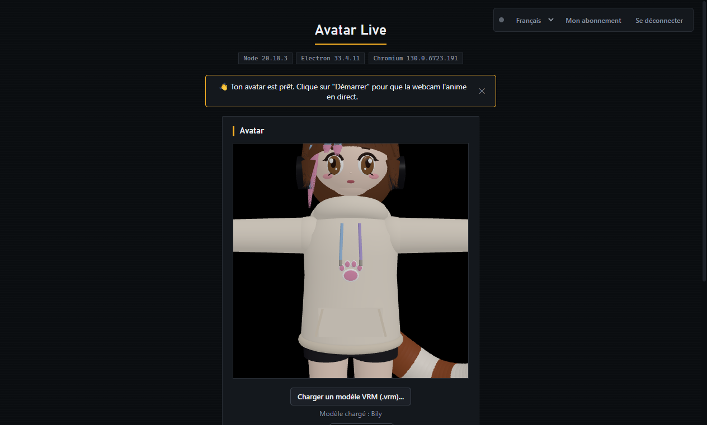

Ton avatar VRM, animé en direct par ta webcam
Avatar Live suit ton visage, tes expressions et tes mouvements en temps réel pour animer un modèle 3D VRM — prêt pour OBS, le stream et l'enregistrement. Pour Windows.
Installateur Windows · mises à jour automatiques incluses
Au premier lancement, Windows SmartScreen peut afficher "Éditeur inconnu" (le logiciel n'est pas encore signé numériquement) — c'est normal, cliquez sur "Informations complémentaires" puis "Exécuter quand même".

Fonctionnalités
Avatars 3D VRM
Charge n'importe quel modèle VRM et vois-le prendre vie avec ton visage et tes expressions.
Suivi visage & corps
Clignement des yeux, expressions, rotation de la tête et suivi du corps en temps réel, directement depuis ta webcam.
Fenêtre de sortie OBS
Une fenêtre dédiée, fond vert ou transparent, prête à être capturée dans OBS ou ton logiciel de stream préféré.
Enregistrement & stream
Enregistre en local ou diffuse directement en RTMP, avec ou sans micro, sans sortir de l'application.
Caméra virtuelle
Utilise ton avatar comme webcam dans Discord, Zoom, Teams ou n'importe quelle application de visio.
Léger et adaptatif
S'ajuste automatiquement à la puissance de ta machine pour rester fluide, même sur un PC modeste.
Tarifs
Configuration requise
Conçu pour rester fluide même sur une machine modeste, sans carte graphique dédiée — l'app s'ajuste automatiquement à la puissance disponible.
Questions fréquentes
Puis-je annuler à tout moment ?
Oui, l'abonnement mensuel ou annuel est sans engagement. Tu peux annuler depuis l'application (gestion de l'abonnement) à tout moment ; l'accès reste actif jusqu'à la fin de la période déjà payée.
Sur combien d'appareils puis-je utiliser mon compte ?
Un compte peut être connecté sur 2 appareils à la fois. Au-delà, il faut déconnecter un appareil existant avant d'en ajouter un nouveau.
Est-ce que mon image de webcam est envoyée sur internet ?
Non. Le suivi du visage et du corps tourne entièrement en local sur ta machine — aucune image de caméra n'est transmise, sauf si tu démarres toi-même un enregistrement ou un stream.
Puis-je utiliser mon propre modèle VRM ?
Ton avatar est fourni et rattaché à ton compte après l'abonnement. Pour un modèle personnalisé, contacte-nous après ton inscription.
Avatar Live fonctionne-t-il sur Mac ou Linux ?
Pas pour le moment — seul Windows 10/11 est pris en charge à ce jour.
Comment ça marche
Télécharge l'appli
Installateur Windows, prêt en quelques secondes.
Crée ton compte
Directement depuis l'application, en quelques champs.
Choisis ton abonnement
Mensuel ou annuel, paiement sécurisé par Stripe.
Ton avatar est assigné
On rattache ton modèle VRM à ton compte, il se charge automatiquement à ta prochaine connexion.